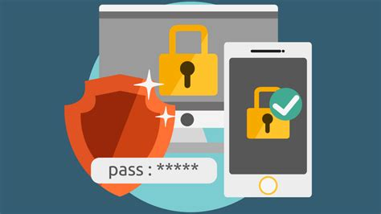

Cómo evitar vulnerabilidades
Un consejo rápido para evitar vulnerabilidades en tus dispositivos es mantenerlos siempre actualizados. Instala las actualizaciones de software, sistema operativo y aplicaciones tan pronto como estén disponibles, ya que suelen incluir parches de seguridad que corrigen fallos conocidos. Además, evita descargar aplicaciones de fuentes no confiables y usa antivirus para detectar posibles amenazas.
Gestion y proteccion tus contraseñas
Cómo Gestionar y Proteger tus Contraseñas de Forma Segura
En la era digital, las contraseñas son la primera línea de defensa contra los ataques cibernéticos. Sin embargo, muchas personas cometen errores comunes, como usar contraseñas débiles o reutilizarlas en múltiples cuentas, lo que las expone a riesgos innecesarios. Aquí te presentamos consejos prácticos para gestionar y proteger tus contraseñas de forma segura:
1. Crea Contraseñas Fuertes y Únicas
Una contraseña segura debe tener al menos 12 caracteres y combinar letras mayúsculas, minúsculas, números y símbolos.
Evita usar información personal como nombres, fechas de nacimiento o palabras comunes.
Ejemplo de contraseña débil: 123456
Ejemplo de contraseña fuerte: 5p!D&9zXo$3a
2. No Reutilices Contraseñas
Reutilizar contraseñas en varias cuentas aumenta el riesgo de comprometer todas tus cuentas si una de ellas es vulnerada. Cada cuenta debe tener una contraseña única.

3. Utiliza un Gestor de Contraseñas
Un gestor de contraseñas te ayuda a almacenar y generar contraseñas únicas de manera segura. Estas herramientas cifran tus contraseñas y las mantienen protegidas. Algunos gestores recomendados incluyen:
LastPass
Dashlane
Bitwarden
4. Habilita la Autenticación en Dos Factores (2FA)
La autenticación en dos factores agrega una capa extra de seguridad al requerir un segundo paso de verificación, como un código enviado a tu teléfono o generado por una app. Activa esta función siempre que sea posible.
5. Actualiza tus Contraseñas Regularmente
Aunque una contraseña sea segura, es buena práctica cambiarla periódicamente, especialmente en cuentas sensibles como correos electrónicos o servicios bancarios.
6. Evita Guardar Contraseñas en Navegadores
Aunque los navegadores ofrecen almacenar contraseñas, no son la opción más segura. Es preferible usar un gestor de contraseñas dedicado.
7. Cuidado con los Correos de Phishing
Nunca compartas tus contraseñas por correo o mensajes. Desconfía de enlaces sospechosos que pidan ingresar tus credenciales, incluso si parecen venir de fuentes legítimas.
8. Comprueba si tus Contraseñas han Sido Filtradas
Herramientas como Have I Been Pwned te permiten verificar si tus contraseñas han sido expuestas en brechas de seguridad. Si descubres alguna vulneración, cámbiala inmediatamente.
9. Usa Contraseñas Temporales en Casos Específicos
Para servicios de corta duración o pruebas, utiliza contraseñas temporales que no afecten tus cuentas principales.
10. Mantén tu Dispositivo Seguro
Una contraseña fuerte es inútil si tu dispositivo está comprometido. Asegúrate de mantener actualizado tu sistema operativo, antivirus y software en general.